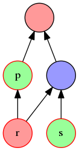

Consistency¶
One necessary property of a group session is that everyone sees the same transcript - that is, the same set of messages and their relative orders.
Concepts¶
Consistency can be viewed as a case of metadata verification. Each message has a sender, a history, and a set of recipients. We verify the sender using cryptographic authentication, verify history by enforcing transitivity, and now we need a way to verify recipients, aka ensure consistency.
Consistency is not consensus. Consensus is the problem of agreeing on a future value or action, that has not been decided yet. With consistency, we only need to agree on what has already happened in the past. So we don’t need to use Byzantine fault tolerance techniques (which have probabilistic success), and can achieve a stronger guarantee with simpler techniques.
With consistency, we only achieve “first-order” knowledge - that is, for each message m, from the point of view of a member u, u knows (P) everyone has seen m, but u doesn’t know if (Q) others know P, nor if (R) they know u knows P, etc. That’s OK; we don’t foresee any situation where we need those latter properties, so they are lesser concerns. For comparison, consensus requires us to achieve common knowledge (i.e. “infinite-order” knowledge).
Previous proposals for consistency have typically involved running a process at the end of a session, to ensure consistency for the whole session. The process is simple to describe but quite costly in terms of information that needs to be exchanged for mutual verification.
We prefer an incremental model of consistency, where we continually verify the other recipients of messages we delivered. Our causal order provides enough bookkeeping information over the lifetime of the session, such that there is minimal communication overhead in doing so.
Since we are verifying other recipients, this must be done after we deliver the message (either as the sender or a recipient). If our transport breaks and we receive no more messages, consistency must not default to “OK”. So our mechanism must include an expiry after which we warn that consistency has not been reached. That is, we need a timer primitive; we cannot just implement consistency checks as part of a packet receive-handler.
As with drop detection, if we reach a good state (here, consistency) after the timeout, we should cancel the warning or at least downgrade its severity. Also, here the warning is associated with a message that is already displayed to the user. Therefore, it is important that the warning is shown not as a point-event for the user to dismiss and forget, but as a persistent state shown together with the message, in the same space and time.
Acks and full-ack¶
We start by looking at per-message consistency. When we see a message, we want to be sure that everyone else also saw it. Rather than trying to enumerate and detect all possible failures, we aim for a certainly-good state. We can be sure that r saw m, if we see a message by r that refers to m. Conveniently, we already have the mechanics for this in our causal order, namely the property that every message refers (transitively) to all its ancestors.
Define that a message m is acked-by r iff ∃ m’ ∈ by(r): m < m’. Define that a message m is fully-acked iff ∀ r ∈ recipients(m): m is acked-by r. [1] Both of these depend implicitly on the current transcript. An “ack” is simply any message that refers to a previous one (the one being acked), not necessarily a special ACK message. [2]
Once a message is acked by everyone else, we are certain that they have seen it, and we reach message consistency. If we did not send the message, we must also make sure that we ack it ourselves - this is necessary for others to reach message consistency. After this, the message is fully-acked, and we no longer need to worry about it. In a valid transcript, a message m becomes fully-acked at the same point for everyone, namely when a process delivers all the direct acks { min(by(r) ∩ des(m)) | r ∈ recipients(m) }, des(m) being the descendant messages of m. Notice the similarity in structure to the definition of context(m) - one may think of these as a “future” context(m). If and when full-ack is reached, this will contain no ⊥ values.

Background colours indicate authorship, red borders indicate messages that are not yet fully-acked. If blue then sends a message referring to r, s, it will cause p to become fully-acked, and help r, s along on the way towards being so. This is an incremental consistency; full-acks occur as new messages arrive, instead of all at once at the end of the session.
Between when a message is delivered and is fully-acked, we need a way to check that it does eventually become fully-acked, and warn or try to recover if this process takes too long. The mechanism must be pro-active, so it must be outside of the packet send/recv logic. We’ll call this an “ack-monitor”, and it would be activated on delivery and de-activated on full-ack. The basic behaviour is to warn the user if full-ack is not reached within a grace period. More complex behaviours that reduce the failure rate, which is vital for usability, are discussed next.
| [1] | This definition becomes slightly more complex when we introduce partial visibility; see that chapter for details. |
| [2] | For space-efficiency, one should store unacked recipients instead of acked ones: when delivered, each message has a set unackby(m) that is equal to recipients(m), and it gradually becomes empty as later messages (that ack it) are delivered. When the set becomes empty, its ack-monitor is cancelled and a “fully-acked” event is emitted. It is also useful to track a set unacked() of messages not-yet fully-acked in the current transcript. When a message m is delivered, it is added to this set, then removed again when unackby(m) becomes empty. TODO: maybe move this to an “implementation” appendix. |
Automatic and explicit¶
The ack-monitor should also handle the case (for messages sent by others) where we don’t ack the message ourselves. In a busy session, the user will likely send a message within the grace period anyway, that will be implictly treated as an ack. In this case, we don’t need to do anything. However, at the end of a session, or during a lull in the conversation, we will need to automatically send an explicit ack on behalf of a user. This would be a special message that is not displayed as normal in the user’s UI, but is still kept in the transcript causal order data structure, in order to track full-acks.
There are some nuances about this. The fact the ack is explicit and carries no other purpose, means that these need not have ack-monitors registered on them. (In the automatic case, this would result in an indefinite sequence of mutual acks. This achieves freshness, as described in the next section, but is not useful for consistency so we’ll skip it for now.)
An implicit ack, such as a normal user message, indicates “some” level [3] of understanding of previous messages. Automatic explict acks should not be interpreted to carry this same weight, because the user has no control over whether they actually read those messages or not. If one desires an explicit “user-level” ack (e.g. in critical situations) there are a few options:
- a manual explicit ack, that must be initiated by the user - like acks in Pond, which are just empty messages.
- a pseudo-manual explicit ack, that may be interpreted like a manual explicit ack. This is triggered automatically, but only when the user is interacting with the application, or has it focused in the foreground.
These would be implemented as a supplement to the automatic ack. Other projects’ terminology for these concepts include “delivery receipt” for “automatic ack” and “read receipt” for “manual/pseudo-manual ack”.
| [3] | The user could avoid reading the messages, but we can’t do anything about this, and it’s dubious that this could be abused for benefit. In the average case, there is some understanding. |
Reliability¶
Consistency requires reliability. If some messages aren’t received by everyone, then of course we can’t verify consistency.
It is quite common for cryptographic systems to ignore reliability, and assume it will be covered by a lower layer. The universal prevalence of TCP today probably encourages this. However, our group messaging scenario introduces some failure modes that cannot be recovered from by a lower layer, and this section will explain these and propose a fix. Such failures will eventually cause a failure of our consistency checks, so it is “safe” to ignore reliability; but unnecessary failures are bad user experience and may incentivise people to choose a less secure application, so should be avoided where possible.
To demonstrate what we mean by “unnecessary failures”, we’ll talk briefly about existing reliability mechanisms. Typically, these will continually resend a packet until it gets a transport-level ack from the recipient. These are not authenticated cryptographically, so transport-level delivery claims are not to be trusted, which is why we have message-level acks above. A malicious transport-level attacker can also just drop any packets to break reliability. However, there are other failure modes that honest transports can’t recover from, but that can be recovered from at the end-to-end message level.
TCP doesn’t communicate ack failures to higher layers. If your partner drops their connection right after your message is passed to TCP, an ack will never be received. Our application might automatically start a new TCP session later, but this won’t know about the lost message from the previous session, resulting eventually in consistency failure. In the instant messaging case, these types of failure may be rare, but they are still unnecessary. And they become much more common and problematic if we want to support asynchronous messaging, where not all users are online at once - there is no Internet standard for a generic reliable asynchronous transport. [4]
With transports that run to a third party, such as a TCP session to a central reflector server, the transport layer does not detect end-to-end reliability failures, even if the server is honest. No matter how hard the server tries to guarantee simultaneous presence, some clients may be offline when a packet is first sent. Some servers try to mitigate this, by resending packets to those offline clients when they come back online. In XMPP, several mechanisms exist that approximate this: session resumption for short transport failures, and discussion history as ad-hoc opportunistic context on joining a channel. However, in both cases the scope of reliability is limited, either time-wise or packet-count-wise. This is an inherent limitation of public servers: they are unable to offer unconditional end-to-end reliability since this requires unconditional buffering of unacked packets, but that may be abused by malicious clients resulting in denial of service. By contrast, clients have the incentive to indefinitely buffer their own not-fully-acked messages.
That is not to say transport-level, or third-party, or non-authenticated, reliability schemes are useless. They are quite cheap to run, and recover from most failures. But the non-recoverable failure rate is much higher in certain environments or for certain use-cases, so it is prudent to implement a more expensive but more robust authenticated end-to-end scheme.
| [4] | Email resending is application specific, has a lot of baggage, and is generally considered unsuitable to build clean applications on top of. |
Resends¶
Easiest to do resends in the ack-monitor.
For as long as the message is not fully-acked, we may periodically resend the message, in anticipation that our original message was not received for whatever reason. This implicit recovery technique results in a simpler protocol and transcript, without needing an explicit “ensure consistency” message.
However, ack-monitors for an implicit ack am sent directly after a sequence of explict acks from the same sender, should also resend these whenever it resends am - recipients must receive anc(am) to be able to deliver am, and we have no other local active mechanism to resend those explicit acks.
TODO - refine resends of previous explicit-acks (cf code)
TODO - ack timing rules, cancel warn-states after full-ack - discuss overhead of acks
To simplify resends, we suggest to follow the “single-ciphertext principle” - each message is communicated as the same ciphertext for everyone, and this applies even if parts of it are encrypted to only a subset of the recipients. This makes it easy to detect duplicate resent messages, and also allows a member to resend a message authored by someone else, which is useful if the latter is absent. All members cache this ciphertext in case they have to resend it to others. When the message is fully-acked, the cached ciphertext may be deleted to save space. This should not affect security of the data, since the threat model already includes an eavesdropper that stores all ciphertext.
However, if an entity can observe multiple recipients receiving the same ciphertext - such as an XMPP server - then this links the members. Hiding this metadata is outside of the scope of this chapter, and the single-ciphertext principle is no worse than existing systems; but newer systems that try to explicitly provide unlinkability will need to think about this.
TODO - refine auto-deletion of old ciphertext that has been full-acked (cf code)
Optimising the exact policy of executing resends can get very complex, so we’ll skip that discussion for now. In practise, we have been using an exponential backoff algorithm, which seems to work adequately.
Duplicates¶
When you receive a duplicate message m, this is (in a normal situation) because someone thinks we haven’t acked the message yet - and perhaps we haven’t. So we need to ack it, until we are confident they have received the ack:
- If m is still in the delivery queue, ignore the duplicate. We don’t even know if it’s a valid message yet - we haven’t received all its ancestors. If and when we do, we would already set an ack-monitor on it, which will handle any future duplicates.
- If we haven’t yet acked m, the ack-monitor we already set on m will handle this situation - i.e. either wait for the user to send an implicit ack, or send an explicit ack later.
- If we have already acked m, say with message am, then:
- If the ack was implicit, then we already set an ack-monitor on am, which should handle this situation, resending am if necessary. (Perhaps am was already fully-acked, in which case m was sent in error, or due to a heavily delayed network, or a replay attack. In any case, the ack-monitor will have already been cancelled and we ignore m, which is the correct behaviour.)
- If the ack was explicit, then we don’t have an ack-monitor on am, so we should resend am. (This is the only case we take action on.)
Note that we say “confidence”, not “guarantee”. This is because with explicit acks, we do not check for full-ack (of the ack) - so perhaps it will be dropped and the recipient will never see it. (If the network is not dropping messages though, we will see their resend m, and be able to act on it as above.)
We believe that this is not a security problem - it is the responsibility of each user to check that all messages they see are fully-acked. If our ack is dropped, then even though we don’t know they have received our ack, we know that they will not treat the un-acked (from their POV) message as part of the consistent transcript - it is not in their interest to do so. So we don’t need to guarantee that our own explicit acks are fully-acked. This avoids the Byzantine agreement problem.
A related concept that does provide a guarantee for explicit acks, is heartbeats. These can be thought of as automatic explicit acks that result in an infinite sequence of mutual acks. But their purpose is to ensure freshness rather than consistency, and their cost may be unsuitable for some asynchronous protocols. So we omit them here, and talk about them separately as an optional feature.
The resend/dedupe scheme outlined above is quite minimal in the messages it chooses to resend. Of course we may do more active resending; however this may open up the path to DoS attacks. More research can be done here; for now we have a good basic scheme with a clear logical justification, so we’ll continue with other topics.
Transcript consistency¶
Future consistency, consistency-on-leave.
Transcript consistency may be constructed simply out of our message consistency primitives. When we want to part, we send a “intend-to-part” message zm then wait for explicit acks to it. Once it is fully-acked, we reach consistency for all of anc(zm), which we’ll treat as the transcript. Recipients should ack these immediately, instead of the usual behaviour of waiting a grace period for the user to manually send an implicit ack. Since there won’t be any future chance to receive the acks, the sender may wait longer than usual for full-ack.
If we receive implicit or explicit acks to any message other than zm, we must ignore them or display/log them permanently with a warning, because we have no chance to verify their consistency. The same goes for implicit acks to zm.
If we fail to reach full-ack for zm (i.e. time out waiting for it), then we still have consistency for all the messages we had previously reached full-ack for, which hopefully is almost equal to anc(zm). For all other messages, we should display/log them permanently with a warning.
TODO: construct a similar mechanism for cases where someone else wants to force us to part.
This ensures consistency for messages that we delivered locally, including ones we sent. What about messages by others that we haven’t delivered, including ones we haven’t even received? We’ll talk about this in the next section.